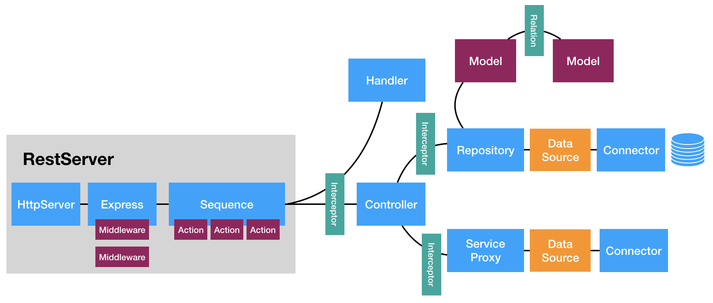

Application Programming Interface
1️⃣ What is an API?¶
An API (Application Programming Interface) is a set of rules that allows one software application to communicate with another.
👉 In simple terms:
API is a messenger that takes your request to a system and brings back the response.
Real Life Example
You → Order food
Waiter → API
Kitchen → Server
You don’t go inside the kitchen. You talk to the waiter (API).
2️⃣ Why Do We Need APIs?
As a Data Analyst / Data Scientist, APIs are important because:
Fetch live data from servers
Integrate backend with frontend
Connect services (Power BI, Tableau, Apps)
Automate data pipelines
Build ML model serving systems
3️⃣ Types of APIs¶
- Open API (Public API)
Available to everyone
Example: Weather API
- Internal API
Used within an organization
- Partner API
Shared with specific partners
- Composite API
Combines multiple APIs in one call
4️⃣ API Architecture Types¶
🔹 1. REST API (Most Common)
Uses HTTP protocol
Stateless
Uses JSON
Very popular in web applications
Example:
GET https://api.example.com/users
🔹 2. SOAP API
Uses XML
More secure
Used in banking systems
🔹 3. GraphQL
Client requests exactly the data it needs
Reduces over-fetching
Example:
{ user(id: 1) { name email } }
5️⃣ HTTP Methods (Very Important)¶
Method Purpose
GET Retrieve data
POST Create data
PUT Update data
PATCH Partial update
DELETE Remove data
6️⃣ HTTP Status Codes¶
| Code | Meaning | Description |
|---|---|---|
| 200 | Success | The request was successful and the server returned the requested data. |
| 201 | Created | A new resource was successfully created (usually after POST request). |
| 400 | Bad Request | The request was invalid or incorrectly formatted. |
| 401 | Unauthorized | Authentication is required or failed. |
| 403 | Forbidden | The client does not have permission to access the resource. |
| 404 | Not Found | The requested resource could not be found. |
| 500 | Server Error | Internal server error occurred on the server side. |
7️⃣ API Request Structure¶
Example Request
GET /users/1 HTTP/1.1
Host: api.example.com
Authorization: Bearer
Components of API Request
Endpoint (URL)
Method (GET, POST)
Headers
Body (optional)
8️⃣ JSON (Most Used Data Format)¶
Sample JSON Response { "id": 1, "name": "Akshay", "role": "Data Analyst" }
Why JSON?
Lightweight
Easy to parse
Human readable
9️⃣ How API Works (Step-by-Step Flow)



Client sends request
Server processes request
Database interaction
Server sends response
Client receives data
🔟 API Authentication¶
- API Key
Simple key provided in request.
?api_key=123456
- Bearer Token (JWT)
Authorization: Bearer eyJhbGciOiJIUzI1...
- OAuth 2.0
Used for login via:
GitHub
1️⃣1️⃣ REST API Example using Python (requests)
Install:
pip install requests
Example:
import requests
url = "https://jsonplaceholder.typicode.com/posts/1"
response = requests.get(url)
print("Status Code:", response.status_code)
print("Response JSON:", response.json())
1️⃣2️⃣ Creating Your Own API using Flask¶
Install:
pip install flask app.py from flask import Flask, jsonify, request
app = Flask(name)
data = [ {"id": 1, "name": "Akshay"}, {"id": 2, "name": "Rahul"} ]
@app.route('/users', methods=['GET']) def get_users(): return jsonify(data)
@app.route('/users', methods=['POST']) def add_user(): new_user = request.json data.append(new_user) return jsonify({"message": "User added"}), 201
if name == 'main': app.run(debug=True)
Run:
python app.py
Open:
http://127.0.0.1:5000/users
1️⃣3️⃣ API Testing Tools¶
4 1. Postman
Most popular tool for API testing.
- Swagger
Auto API documentation.
- cURL
Command-line API testing.
Example:
curl https://jsonplaceholder.typicode.com/posts/1
1️⃣4️⃣ Rate Limiting
API limits the number of requests per minute.
Example:
100 requests per minute
If exceeded → 429 Too Many Requests
1️⃣5️⃣ Pagination
When API has large data:
GET /users?page=1&limit=10
1️⃣6️⃣ API Versioning
/api/v1/users
/api/v2/users
Why?
Maintain backward compatibility
1️⃣7️⃣ Best Practices
Use HTTPS
Proper status codes
Use nouns in endpoint
Keep it stateless
Proper documentation
Input validation
Error handling
1️⃣8️⃣ API vs Webhook
API Webhook
Client requests data Server sends data automatically
Pull mechanism Push mechanism
1️⃣9️⃣ API in Data Science
Fetch live stock data
Deploy ML model as API
Connect Power BI to backend
Microservices architecture
Automate ETL pipelines
2️⃣0️⃣ Deploying ML Model as API (FastAPI Example)
pip install fastapi uvicorn
from fastapi import FastAPI
import joblib
app = FastAPI()
model = joblib.load("model.pkl")
@app.get("/") def home(): return {"message": "ML API Running"}
@app.post("/predict") def predict(data: dict): prediction = model.predict([data["input"]]) return {"prediction": prediction.tolist()}
Run:
uvicorn app:app --reload